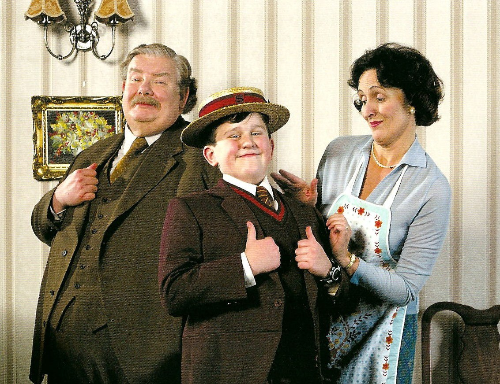

<div class="page-wrapper">
	<div class="page">
		<p>Миссис Поттер приходилась миссис Дурсль родной сестрой, но они не виделись вот уже несколько лет. Миссис Дурсль даже делала вид, что у нее вовсе нет никакой сестры, потому что сестра и ее никчемный муж были полной противоположностью Дурслям.</p>
		<div class="img-wrapper">
			
			<div class="paragraph-wrapper">
				<p>Дурсли содрогались при одной мысли о том, что скажут соседи, если на Тисовую улицу пожалуют Поттеры. Дурсли знали, что у Поттеров тоже есть маленький сын, но они никогда его не видели. И они категорически не хотели, чтобы их Дадли общался с ребенком таких родителей.</p>
				<p>Когда во вторник мистер и миссис Дурсль проснулись скучным и серым утром — а именно с этого утра начинается наша история, — ничто, включая покрытое тучами небо, не предвещало, что вскоре по всей стране начнут происходить странные и загадочные вещи.  </p>
			</div>
		</div>
		<p> Мистер Дурсль что-тонапевал себе под нос, завязывая самый отвратительный из своих галстуков. А миссис Дурсль, с трудом усадив сопротивляющегося и орущего Дадли на высокий детский стульчик, со счастливой улыбкой пересказывала мужу последние сплетни.</p>
		<p>Никто из них не заметил, как за окном пролетела большая сова-неясыть.</p>
	</div>
</div>